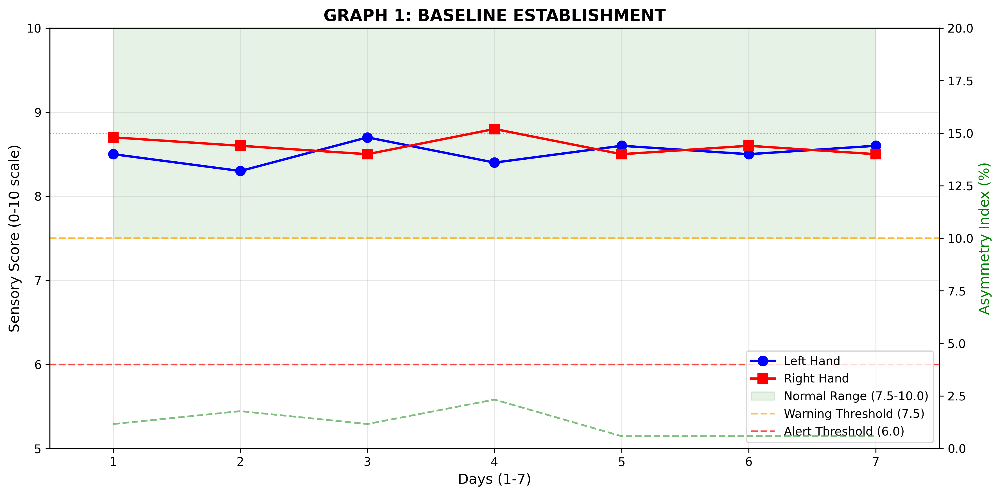
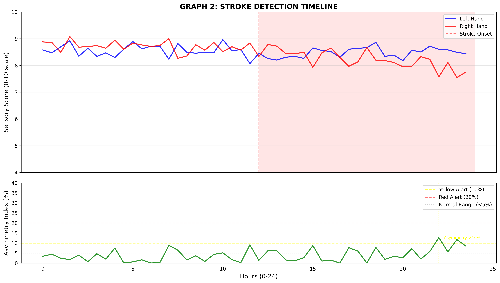
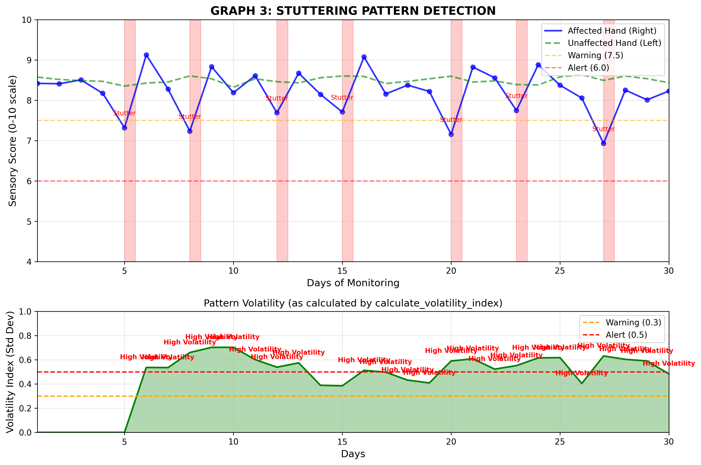
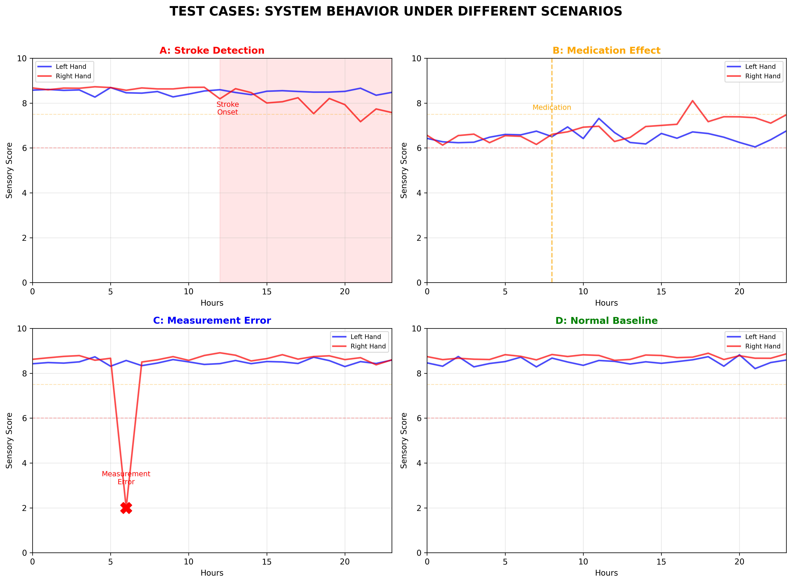

📊 Stroke Detection System Graphs
Graph 1: Baseline Establishment

Shows first 7 days establishing normal range with 0-10 scale sensory scores
Graph 2: Stroke Detection Timeline

24-hour period showing stroke onset with stuttering pattern
Graph 3: Stuttering Pattern Analysis

30-day monitoring showing lacunar stroke stuttering pattern with volatility index
Test Cases Comparison

Four scenarios showing system behavior with different conditions